Editora
2024
O logótipo da EMIND foi desenvolvido com a intenção de combinar um visual limpo com um toque editorial.
Projetos editoriais desenvolvidos com uma abordagem personalizada para refletir a identidade e a visão de cada autor.
2024
O logótipo da EMIND foi desenvolvido com a intenção de combinar um visual limpo com um toque editorial.
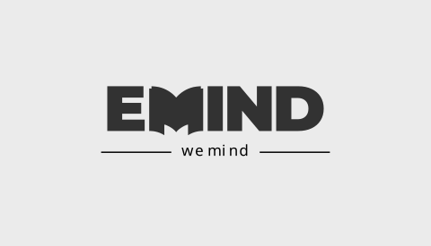

A fonte Poppins foi utilizada e o M foi trabalhado de forma a criar um símbolo que remete para a forma de um livro.


A paleta de cores combina tons de cinzento com um azul forte, garantindo contraste e uma identidade simples e moderna.


2026
Identidade visual Secção de Jogos de Tabuleiro do Centro Cultural da Guarda.
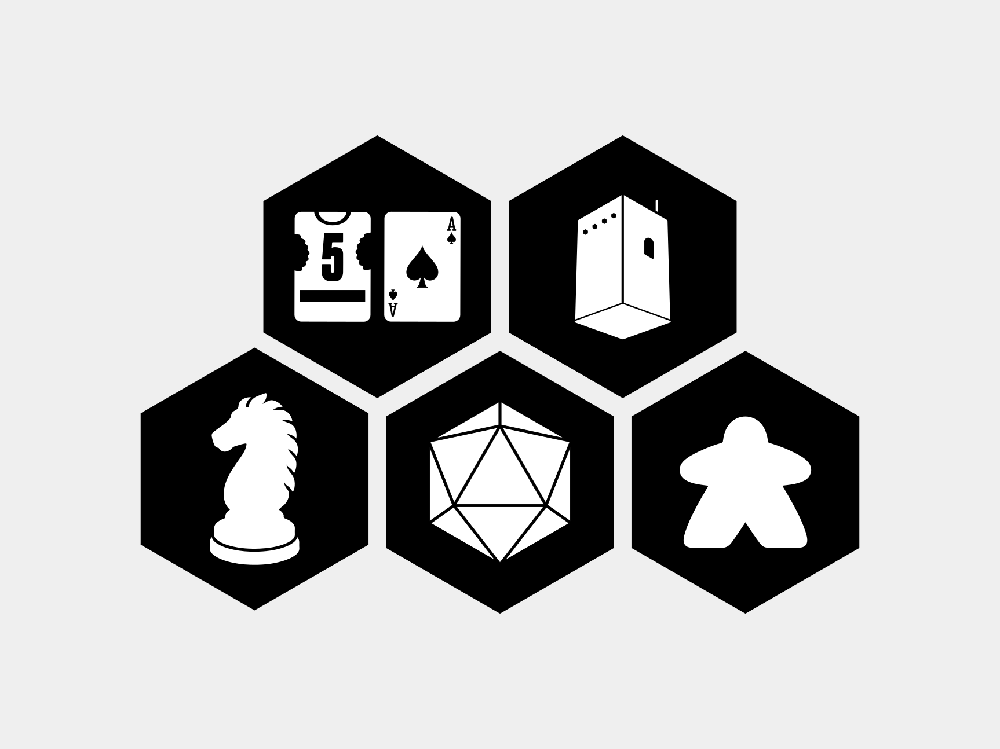
Identidade inspirada na Torre de Menagem da Guarda, no meeple, no cavalo do xadrez, em cartas de baralho e do jogo Flip 7, no dado de 20 faces e em elementos de Catan, criando uma imagem própria para uma nova área dedicada aos jogos de tabuleiro.
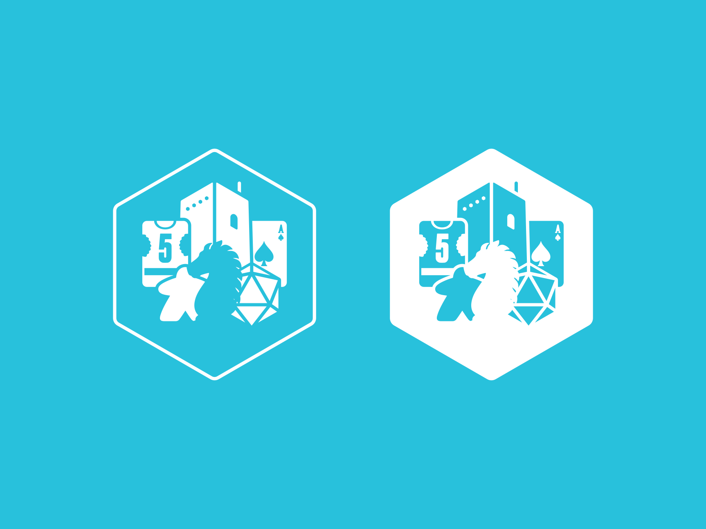
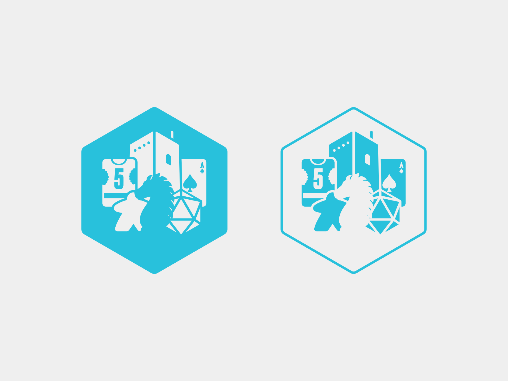
O projeto explora uma identidade gráfica inspirada no universo dos jogos, combinando elementos como cartas, peças e dados num símbolo geométrico. A identidade foi aplicada a diferentes suportes, incluindo logótipo, versões cromáticas e merchandising.
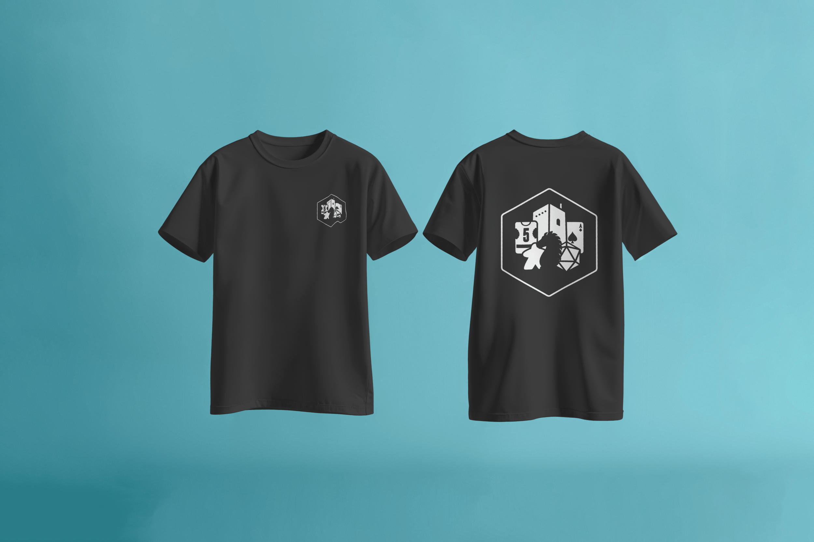
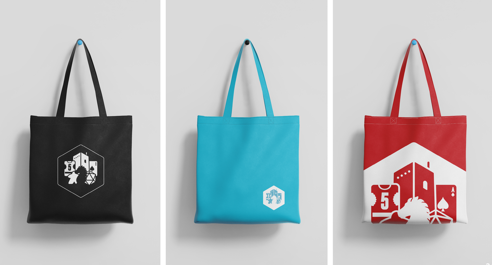
2026
Desenvolvimento de uma identidade e sistema de comunicação para um projeto de investigação em cardio-oncologia, incluindo guias, materiais informativos, kits e suportes de recrutamento.
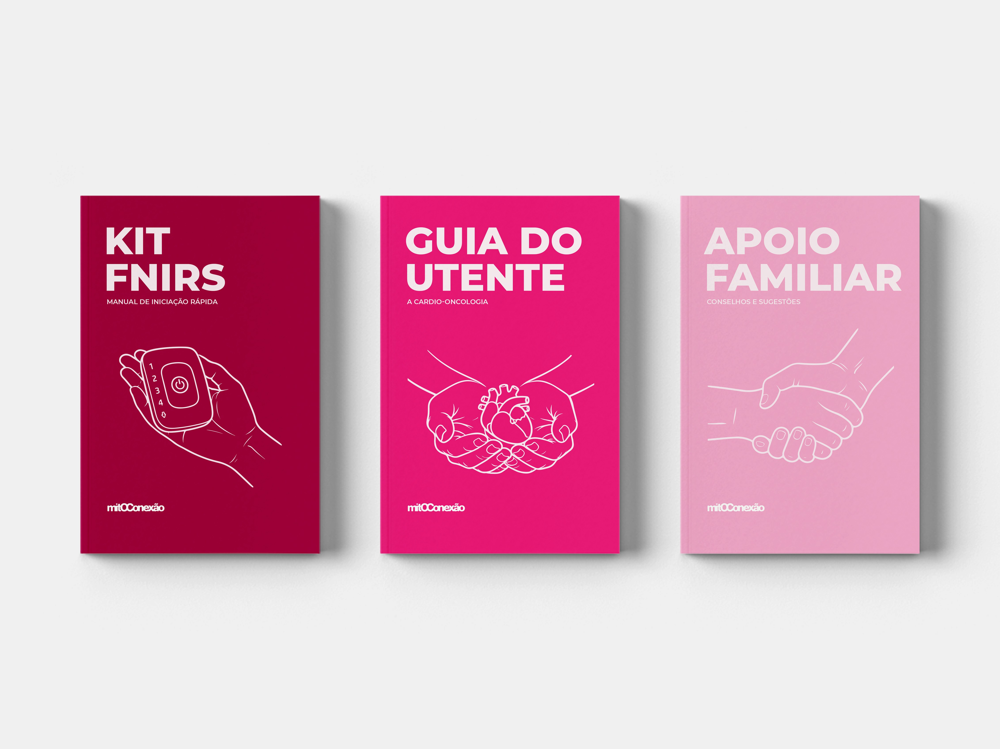

O MitOConexão investiga a relação entre o cancro da mama e a doença cardiovascular. O projeto explora como o design pode tornar esta investigação mais compreensível e acessível aos seus públicos.
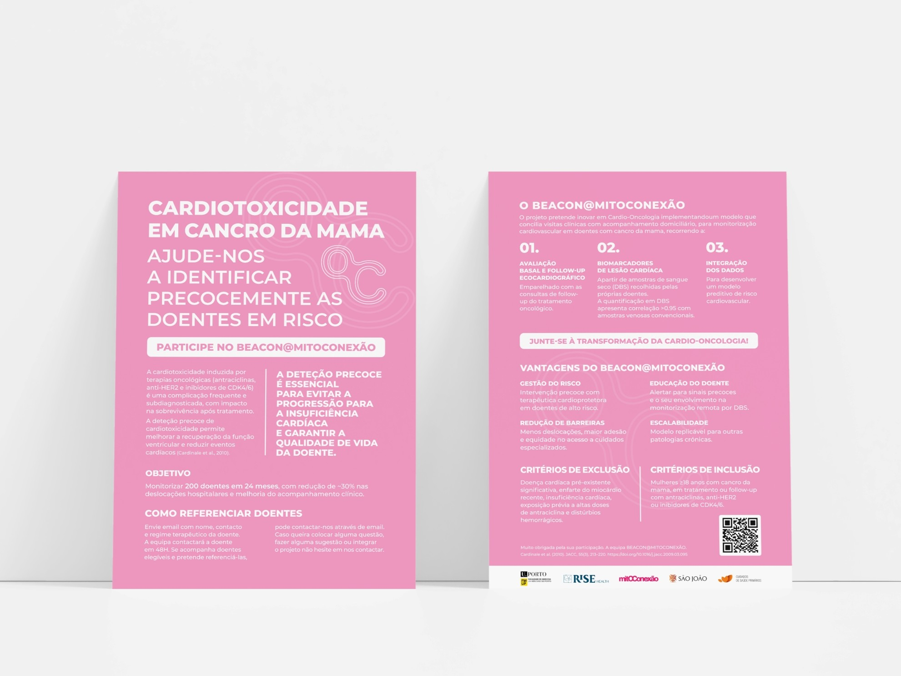
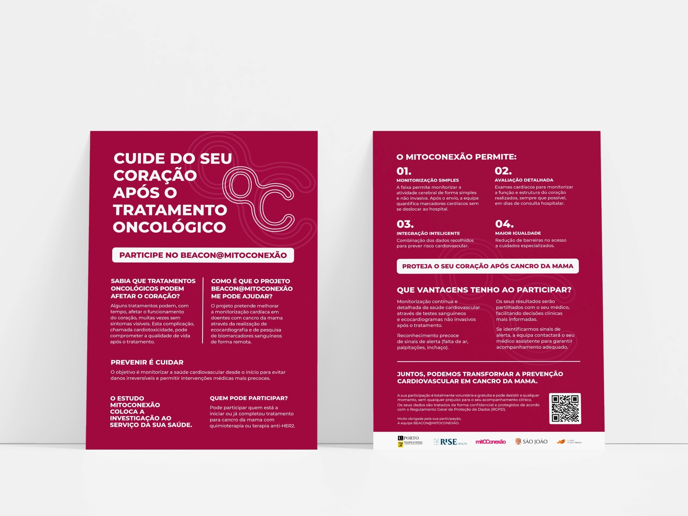
Foi desenvolvido um sistema de comunicação que inclui identidade visual, guias, materiais informativos, kits e suportes de recrutamento, criando uma linguagem visual coerente, clara e acessível.
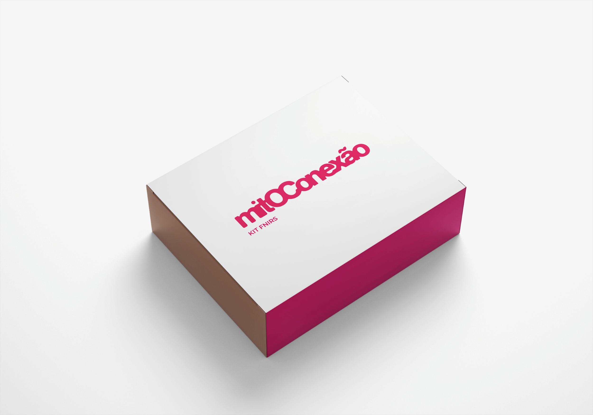
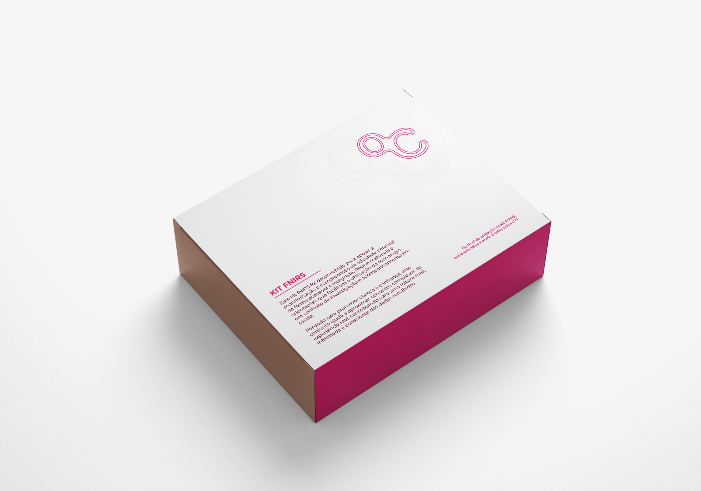
2025
Perturbações da Aprendizagem Específicas.
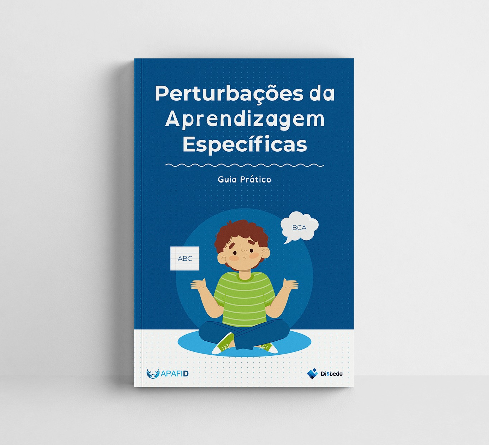
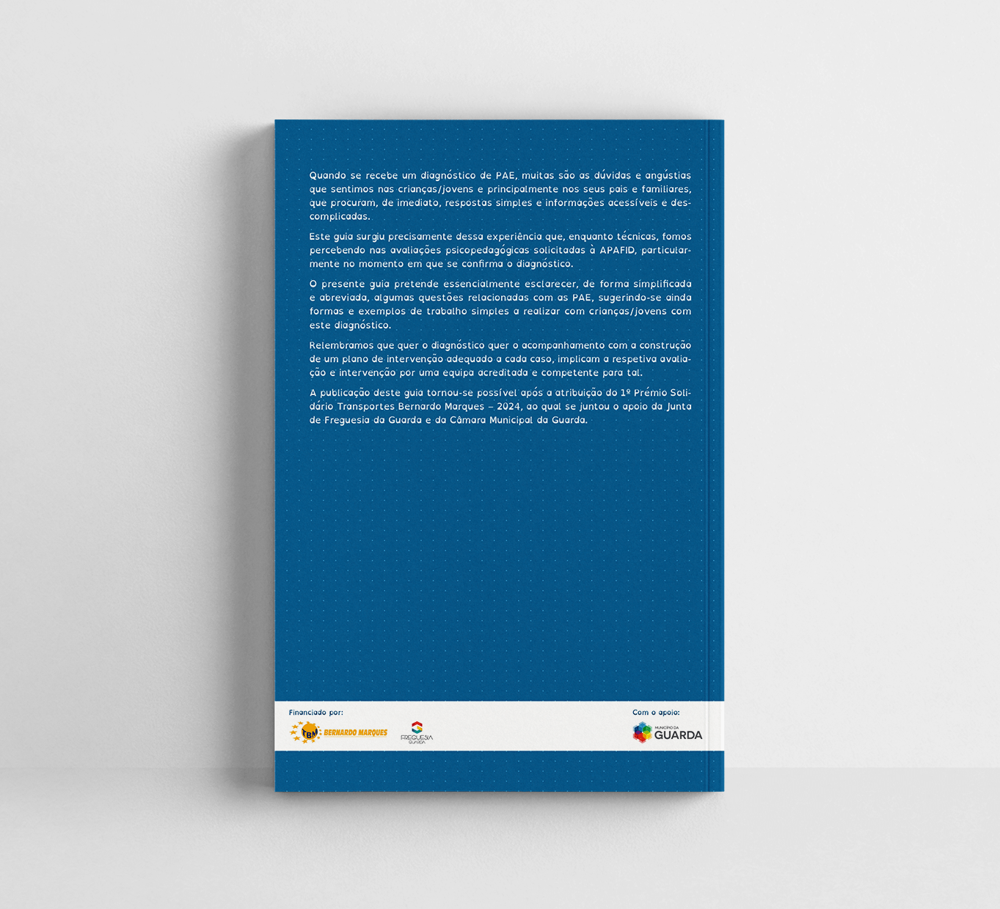
Este guia surge da necessidade de esclarecer as dúvidas associadas ao diagnóstico de Perturbações da Aprendizagem Específicas (PAE), sobretudo para pais e familiares. Desenvolvido pela APAFID, procura tornar esta informação mais clara, acessível e descomplicada.


A publicação aborda a dislexia, a disortografia e a discalculia, apresentando definições, sinais de alerta, formas de avaliação e estratégias de apoio. Pretende ser um recurso prático para pais, cuidadores e profissionais que acompanham crianças e jovens com PAE.